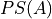

Combinatorics
Combinatorics is the study of sequences and the order in which they occur.
Definitions
- Power Set
The Power Set of a set A, denoted , is the set of all subsets of A.
- Sequences
An ordered set of numerical elements. The i:sup:th element of a sequence is called the i:sup:th term of the sequence
Fundamental Counting Principles
Motivation
Suppose you live in the aptly named Town A and are planing a road trip to the similarly uninspired Town C. You plan on stopping at Town B to fill up your gas tank before proceeding to Town C.
Suppose further there are two routes from Town A to Town B, and there are four routes from Town B to Town C, depicted below.
INSERT PICTURE HERE
How many routes can you take from Town A to Town B, and then from Town B to Town C?
Try It Yourself
The answer becomes obvious if we label the graphic pictured above appropriately. Use a *directed arrow* starting from each point to show each route taken.
INSERT PICTURE HERE
The number of possible routes is equal to the number of endpoints in graph pictured above. In this case, 8.
These types of graphs are called tree diagrams <tree_diagrams> and they are very useful for visualizing the sample spaces of experiments that are composed successive, independent choices, as in this example.
The Counting Principle
We now generalize the example in the previous section into the Counting Principle, using the language of `Set Theory</notes/SET_THEORY>.
Proposition
Let the sets E and F have cardinalities n and m. Let G of sequences xy formed by first selecting an element from E
Note
Try It Yourself
TODO
Warning
We state the Counting Principle rigorously below
System Message: WARNING/2 (n(E) = n \and n(F) = m)
latex exited with error
[stdout]
This is pdfTeX, Version 3.141592653-2.6-1.40.22 (TeX Live 2022/dev/Debian) (preloaded format=latex)
restricted \write18 enabled.
entering extended mode
(./math.tex
LaTeX2e <2021-11-15> patch level 1
L3 programming layer <2022-01-21>
(/usr/share/texlive/texmf-dist/tex/latex/base/article.cls
Document Class: article 2021/10/04 v1.4n Standard LaTeX document class
(/usr/share/texlive/texmf-dist/tex/latex/base/size12.clo))
(/usr/share/texlive/texmf-dist/tex/latex/base/inputenc.sty)
(/usr/share/texlive/texmf-dist/tex/latex/amsmath/amsmath.sty
For additional information on amsmath, use the `?' option.
(/usr/share/texlive/texmf-dist/tex/latex/amsmath/amstext.sty
(/usr/share/texlive/texmf-dist/tex/latex/amsmath/amsgen.sty))
(/usr/share/texlive/texmf-dist/tex/latex/amsmath/amsbsy.sty)
(/usr/share/texlive/texmf-dist/tex/latex/amsmath/amsopn.sty))
(/usr/share/texlive/texmf-dist/tex/latex/amscls/amsthm.sty)
(/usr/share/texlive/texmf-dist/tex/latex/amsfonts/amssymb.sty
(/usr/share/texlive/texmf-dist/tex/latex/amsfonts/amsfonts.sty))
(/usr/share/texlive/texmf-dist/tex/latex/anyfontsize/anyfontsize.sty)
(/usr/share/texlive/texmf-dist/tex/latex/tools/bm.sty)
(/usr/share/texlive/texmf-dist/tex/latex/l3backend/l3backend-dvips.def)
(./math.aux) (/usr/share/texlive/texmf-dist/tex/latex/amsfonts/umsa.fd)
(/usr/share/texlive/texmf-dist/tex/latex/amsfonts/umsb.fd)
! Misplaced \crcr.
\endtabular ->\crcr
\egroup \egroup $\egroup
l.15 \fontsize{12}{14}\selectfont $n(E) = n \and
n(F) = m$
! Extra }, or forgotten $.
\endtabular ->\crcr \egroup
\egroup $\egroup
l.15 \fontsize{12}{14}\selectfont $n(E) = n \and
n(F) = m$
! Extra }, or forgotten $.
\endtabular ->\crcr \egroup \egroup
$\egroup
l.15 \fontsize{12}{14}\selectfont $n(E) = n \and
n(F) = m$
! Too many }'s.
\endtabular ->\crcr \egroup \egroup $\egroup
l.15 \fontsize{12}{14}\selectfont $n(E) = n \and
n(F) = m$
! LaTeX Error: \begin{document} ended by \end{tabular}.
See the LaTeX manual or LaTeX Companion for explanation.
Type H <return> for immediate help.
...
l.15 \fontsize{12}{14}\selectfont $n(E) = n \and
n(F) = m$
! Extra \endgroup.
<recently read> \endgroup
l.15 \fontsize{12}{14}\selectfont $n(E) = n \and
n(F) = m$
! LaTeX Error: \begin{tabular} on input line 15 ended by \end{document}.
See the LaTeX manual or LaTeX Companion for explanation.
Type H <return> for immediate help.
...
l.16 \end{document}
! Improper \prevdepth.
\newpage ...everypar {}\fi \par \ifdim \prevdepth
>\z@ \vskip -\ifdim \prevd...
l.16 \end{document}
! Missing $ inserted.
<inserted text>
$
l.16 \end{document}
! Missing } inserted.
<inserted text>
}
l.16 \end{document}
! Missing } inserted.
<inserted text>
}
l.16 \end{document}
! Missing \cr inserted.
<inserted text>
\cr
l.16 \end{document}
! Missing { inserted.
<inserted text>
{
l.16 \end{document}
(./math.aux)
! You can't use `\end' in internal vertical mode.
\enddocument ...cument/end}\deadcycles \z@ \@@end
l.16 \end{document}
! LaTeX Error: \begin{tabular} on input line 15 ended by \end{document}.
See the LaTeX manual or LaTeX Companion for explanation.
Type H <return> for immediate help.
...
l.16 \end{document}
! Missing } inserted.
<inserted text>
}
l.16 \end{document}
! Missing $ inserted.
<inserted text>
$
l.16 \end{document}
! Missing } inserted.
<inserted text>
}
l.16 \end{document}
)
! Emergency stop.
<*> math.tex
No pages of output.
Transcript written on math.log.
:math:``
Generalized Counting Principle